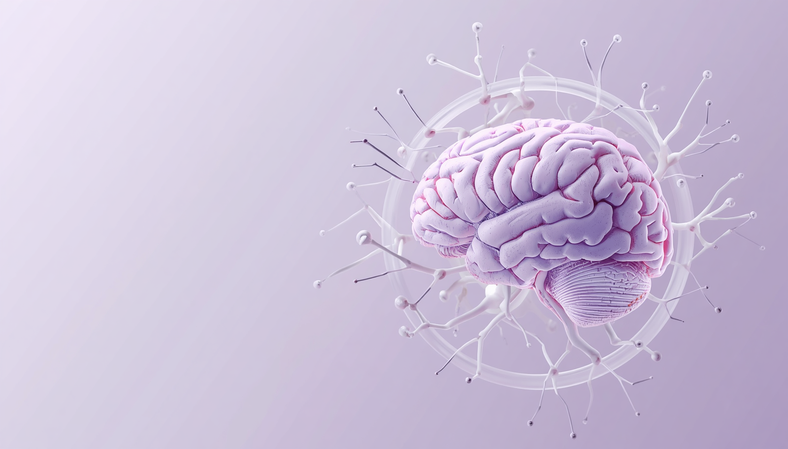

Εκπαίδευση & Ενημέρωση
Έγκυρη και κατανοητή πληροφόρηση για τη Σκλήρυνση κατά Πλάκας, οργανωμένη σε βασικές θεματικές ενότητες και προσαρμοσμένη στις πραγματικές ανάγκες των ατόμων με ΣΚΠ και των οικογενειών τους.

Τι είναι η ΣΚΠ;
Η Σκλήρυνση κατά Πλάκας είναι μια χρόνια νευρολογική πάθηση που επηρεάζει το Κεντρικό Νευρικό Σύστημα. Πρόκειται για μια κατάσταση κατά την οποία το ανοσοποιητικό σύστημα επιτίθεται στη μυελίνη, δηλαδή στο προστατευτικό περίβλημα των νευρικών ινών.
Η βλάβη αυτή μπορεί να επηρεάσει την επικοινωνία μεταξύ εγκεφάλου και σώματος, οδηγώντας σε διαφορετικά συμπτώματα και διαφορετική πορεία από άνθρωπο σε άνθρωπο.
Συμπτώματα & Διάγνωση
Τα συμπτώματα της ΣΚΠ διαφέρουν σημαντικά. Μπορεί να περιλαμβάνουν κόπωση, διαταραχές στην όραση, μούδιασμα, αδυναμία, δυσκολίες στην ισορροπία ή στην κίνηση.
Η διάγνωση γίνεται από εξειδικευμένο νευρολόγο και συνήθως βασίζεται σε κλινική εκτίμηση, μαγνητική τομογραφία και άλλες εξετάσεις, όπου χρειάζεται.
Θεραπευτική προσέγγιση
Η αντιμετώπιση της ΣΚΠ περιλαμβάνει θεραπευτικές επιλογές που στοχεύουν στη μείωση της δραστηριότητας της νόσου, στην αντιμετώπιση των υποτροπών και στη διαχείριση των συμπτωμάτων.
Η θεραπευτική στρατηγική εξατομικεύεται και διαμορφώνεται πάντα σε συνεργασία με τον θεράποντα ιατρό, σύμφωνα με τις ανάγκες και την πορεία κάθε ανθρώπου.
Καθημερινότητα & Υποστήριξη
Η ζωή με ΣΚΠ επηρεάζεται από πολλούς παράγοντες: τη σωματική κατάσταση, την ψυχολογία, την εργασία, τις σχέσεις και την πρόσβαση στην κατάλληλη φροντίδα.
Η ενημέρωση, η υποστήριξη από την κοινότητα, η διεπιστημονική φροντίδα και η κατανόηση από το περιβάλλον μπορούν να βελτιώσουν ουσιαστικά την καθημερινότητα.